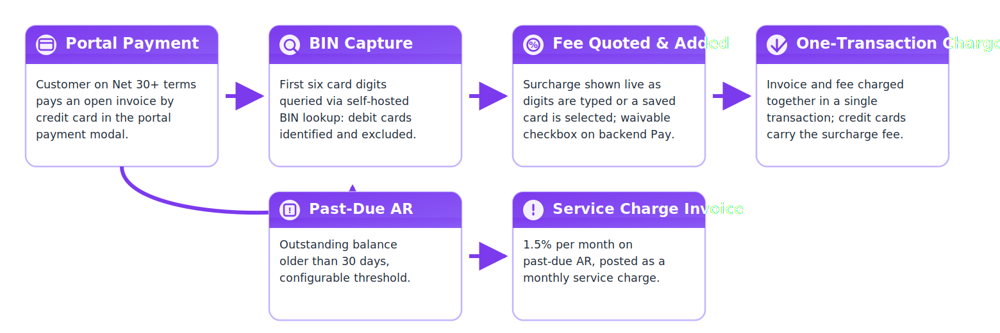
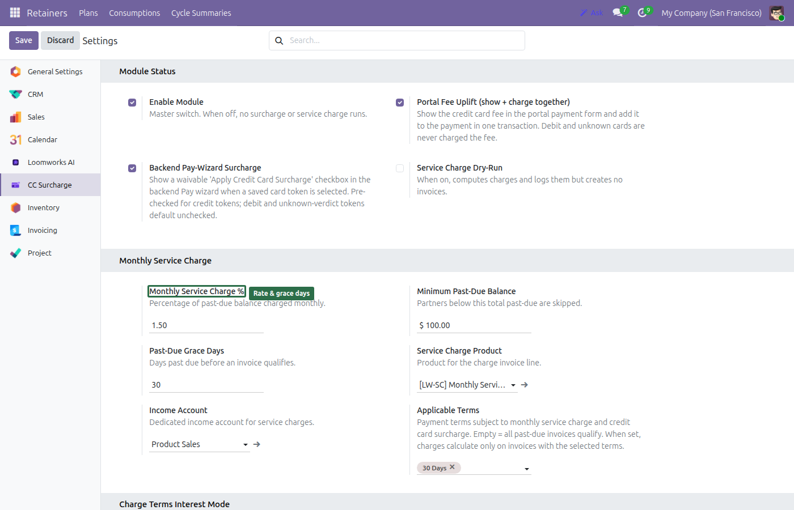
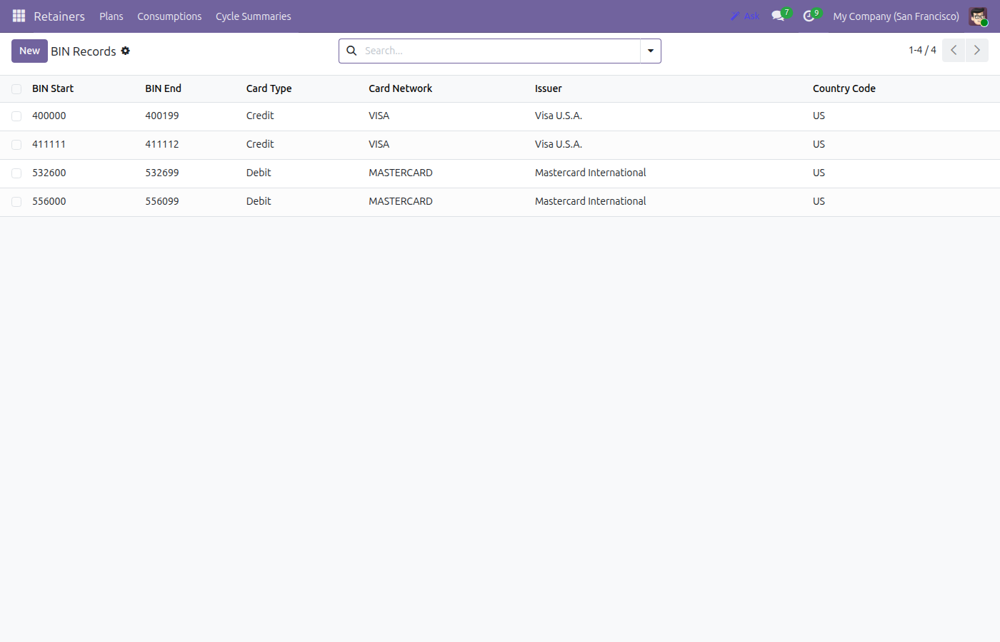
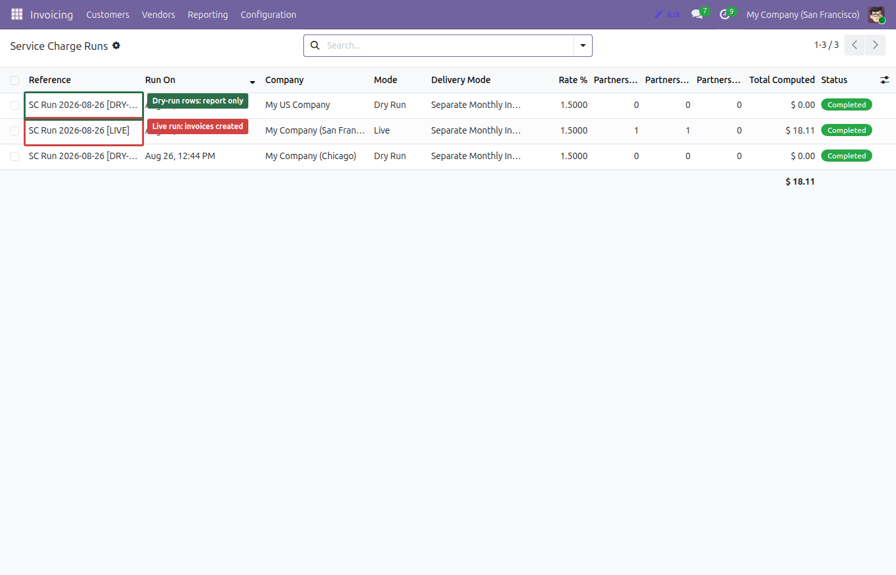
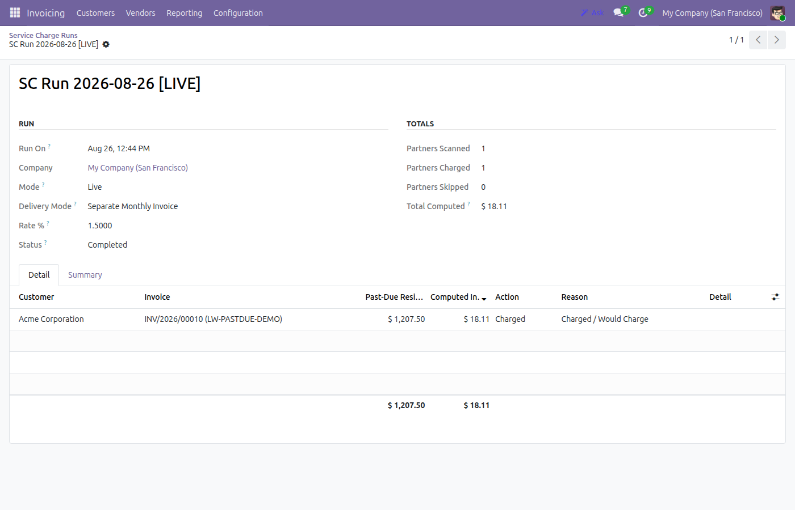
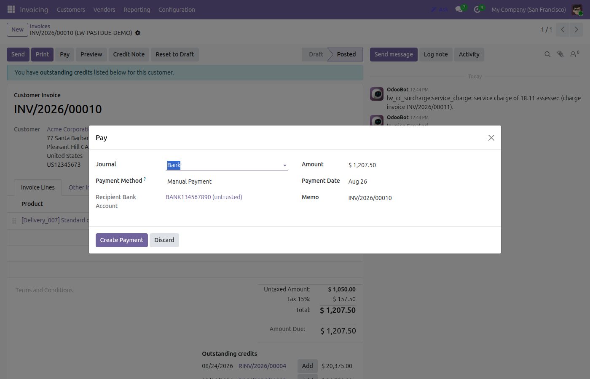
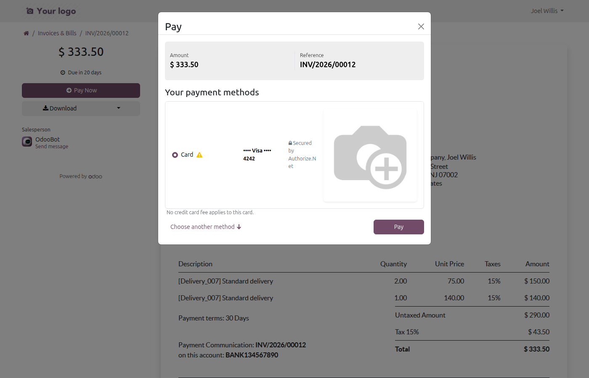

Credit card surcharges with automatic debit-card BIN exclusion and portal fee quotes, plus a monthly service charge on past-due balances — in one module.
Add a configurable percentage fee when Net 30+ customers pay by credit card. The fee posts as its own invoice or as a line on the invoice being paid — your choice of accounting treatment.
Self-hosted BIN (Bank Identification Number) lookup with quarterly CSV refresh. Debit and unidentifiable cards are never surcharged, so your cardholders are never surprised.
Customers see the exact fee before they pay: quoted as soon as the first six card digits are entered or a saved card is selected, then charged as invoice + fee in one transaction.
Staff register card payments with a waivable surcharge checkbox, pre-checked for credit-card tokens. Every gate is re-validated server-side.
1.5% per month on balances past due over 30 days (rate, grace days and minimum balance all configurable). A monthly cron computes and reports — and only invoices when you say so.
Installs in dry-run: the cron reports monthly and creates zero invoices until you set an income account and explicitly go live. No money moves by accident.
| App | Price | What's included |
|---|---|---|
| Loomworks CC Surcharge Suite | $129 one-time | Surcharge engine, BIN-aware debit-card exclusion, portal fee quote, backend Pay-wizard surcharge, monthly past-due service charge, dry-run safety |
| Credit card surcharge app — entry edition (Sonny Huynh) | $209.95 | — |
| Credit card surcharge app — premium edition (Sonny Huynh) | $326.59 | — |
| Surcharge module (echoBitz) | ~$102 | — |
Priced roughly 40% below the entry edition of the leading standalone surcharge app — and the monthly past-due service charge is included in the same purchase instead of a separate module. One license per installed company.







Install it like any Odoo module (Apps > Update Apps List, then Install). Open Accounting > Configuration > Settings > CC Surcharge, set your surcharge percentage and applicable payment terms, load a BIN-list CSV, and (optionally) enable the portal fee uplift.
This module is built for Odoo 19.0 (module version 19.0.1.0.0) and is live-tested on Odoo 19 Community Edition.
Per the Odoo Apps Store policy, buyers may request a refund within 14 days of purchase if the app does not work as described.
Questions get a reply within one business day at stephen@loomworks.dev.
Yes. The module runs entirely inside your own Odoo database and collects nothing. BIN lookups use a self-hosted reference table, and card data is handled by your existing Authorize.Net integration.
The monthly service charge cron computes charges and writes the per-invoice audit report, but creates zero invoices. It only goes live once you set a dedicated Service Charge Income Account and switch Dry-Run Mode off — the module refuses to leave dry-run without the account.